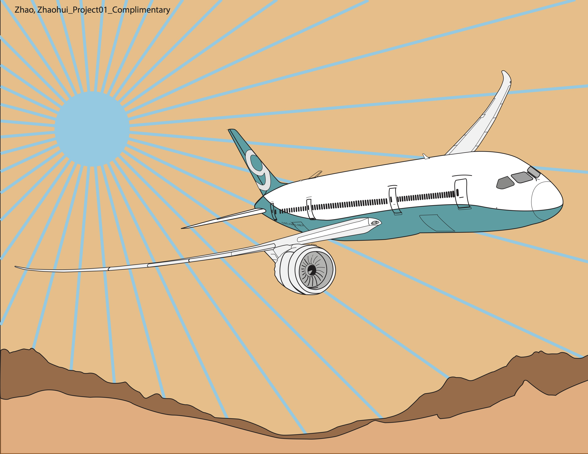
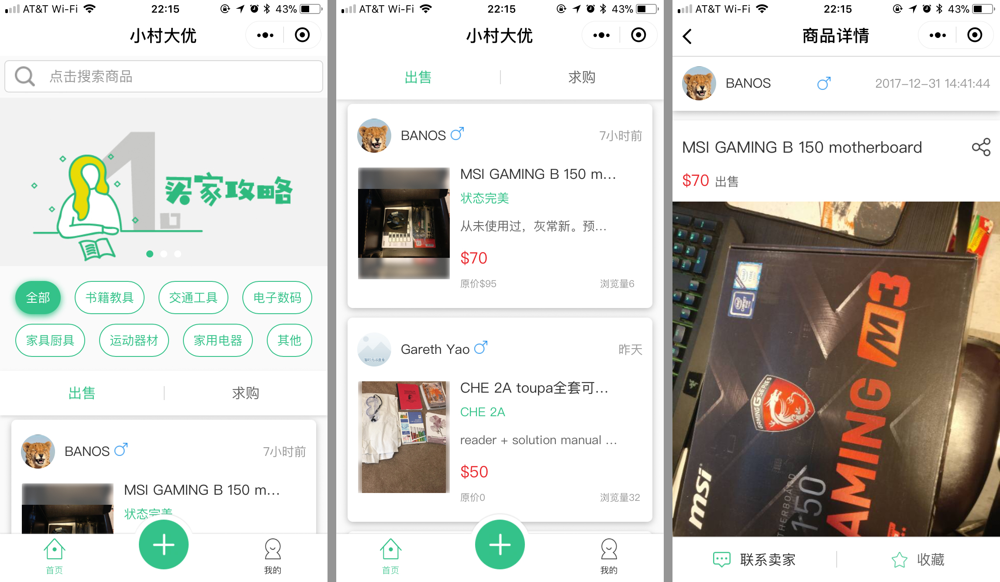

ZHAOHUI ZHAO
COLOR SCHEME EXPERIMENT
The parameter of this project was to sketch an object and its surroundins then color it with schemes consist of the harmonies of a chosen base color's tints and shades.
I started with the sketch: the object of my choice is a Boeing 787 Dreamliner: even without colors, its beautifully curved wings and fuelsage already make it an intriguing standalone object, and thereby would help my composition to achieve the goal of aestheically pleasing as a whole. Also, I'm a avid avation enthusiast and choosing an object of my interest would encourage me to put more effort into sketching it.
After I'm satisfied with the sketch, I turned my attention to choosing a base color. Since I'm working with an object of the sky, I believe only the color of the sky would be commensurate, which also happens to be my favourite color –– Blue.
{kind=link}
And my first experiment proved me correct: the monochormatic harmonies of a shade of blue created a calming and pleasing midnight flight atmosphere for the composition that I deemed to be alluring.
With the success of the first experiment, I continued to explore the combinations with tones of blue and try to assign a meaningful theme for each combination.
{kind=link}
For this scheme, I applied the complimentary harmony for a tint of blue, and the end result is a whiff of cool feeling above a mid-summer desert.
{kind=link}
Also a mid-summer's day, but this scheme of light blue and triad harmony elicit the sense of heat by the bright sunshine.
{kind=link}
For the last one, a very deep blue as base color and the analogous harmony built a sunset scene of the spacious skies above the purple mountains' majesty.